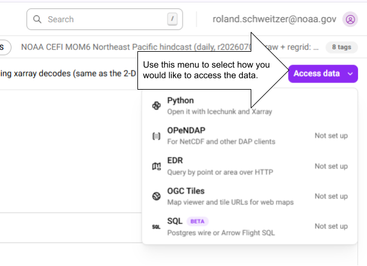
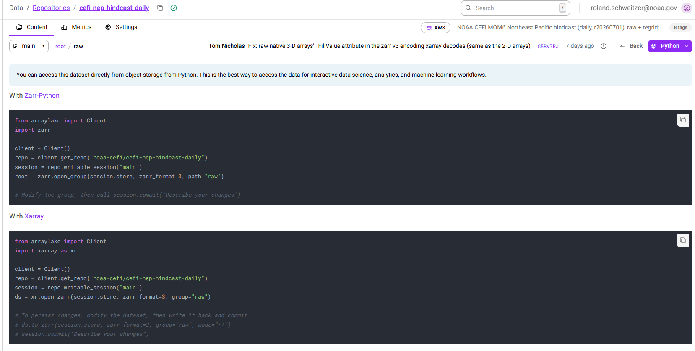
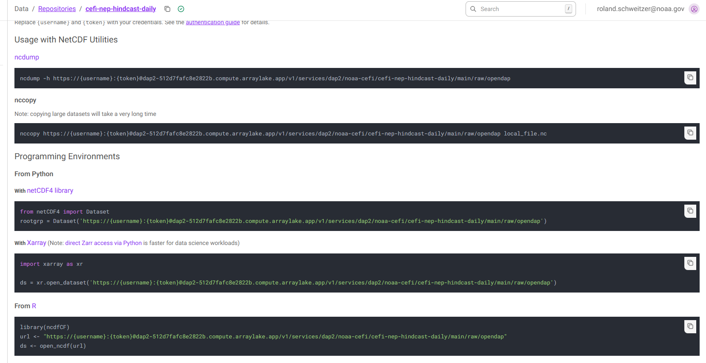

Navigating the Earthmover Catalog#
When follow one of the links you will land in the catalog for the region, experiment type, and grid that contains your selected variable, but you many not immediately see it because the catalog groups all the variables onto one page. That’s actually good news, because when you follow the instructions for accessing the data you will have access to all the variables on that catalog page with only a few lines of code. Use the menu in the upper right to choose how you want to access the data. For now, if you are an R user, pick the OPeNDAP option.

Python#
Choosing the Python will show you code snippets that will allow you to access the data using either zarr or xarray. For most people, xarray is the best option. It has many high level features for Earth science data analysis.

OPeNDAP#
Right now the best option for R access is OPeNDAP. Earthmover and the community are developing solutions for R access using the ArrayLake interface as is the standard for Python. Until those solutions are available, OPeNDAP is the best option. On the OPeNDAP data access page pay particular attention to the section showing how to read the data set in R.

N.B. the OPeNDAP service is set to scale to 0 when not in use. In other words, if no requests are made for a period of time, the service will shut down. The service will automatically restart when a request is made, but there may be a small delay while it starts up. Once it has restarted all subsequent requests will begin returning data almost immediately.
Read the Earthmover Catalog with Python#
Each of the data sets which make up the CEFI model output collection is represented in the Earthmover catalog as an Icechunk repository. As such, you can use the Icechunk Python API to scan the catalog with your own Python code. Once you discover a data set of interest with you code, you can read the data itself using xarray (or zarr). This chunk of code runs through the entire data collection and finds all the data variables with ‘temp’ in their name or long_name attribute. It only takes a few seconds to run.
from arraylake import Client
import os
from dotenv import load_dotenv
import zarr
import xarray as xr
# Set the organization to search
org = "NOAA-CEFI"
# N.B. I am logging into the catalog while it is still private. When it is public, the login code
# will look a bit different.
#
# Load environment variables from the .env file
load_dotenv()
ARRAYLAKE_TOKEN = os.getenv("ARRAYLAKE_TOKEN")
client = Client(token=ARRAYLAKE_TOKEN)
# Find all the repos that belong to NOAA-CEFI
repos = client.list_repos(org)
for repo in repos:
print(f"\n📦 Processing Repository: {repo.name}")
try:
repo_obj = client.get_repo(f"{org}/{repo.name}")
session = repo_obj.readonly_session(branch="main")
root_group = zarr.open_group(session.store, mode="r")
root_attrs = dict(root_group.attrs)
# Discover all unique groups containing arrays
groups_with_arrays = set()
for path, member in root_group.members(max_depth=None):
if isinstance(member, zarr.Array):
parent_group = os.path.dirname(path)
groups_with_arrays.add(parent_group)
for group_path in sorted(groups_with_arrays):
print(f" 📂 Processing group: {group_path}")
group_arg = group_path if group_path else None
try:
ds = xr.open_zarr(session.store, group=group_arg)
for var in ds.data_vars:
long_name = None
if 'long_name' in ds[var].attrs:
long_name = ds[var].attrs['long_name']
if 'temp' in var.lower():
print(f" 🎉 Found a variable called {var}{f' with long_name = {long_name}' if long_name else ''}.")
else:
if long_name and 'temp' in ds[var].attrs['long_name'].lower():
print(f" 🎉 Found a variable called {var} with long_name = {long_name}")
except Exception as e:
print(f' ❌ Failed to open {group_arg} because of {e}')
except Exception as e:
print(f'❌ Failed to read {repo.name} because of {e}')